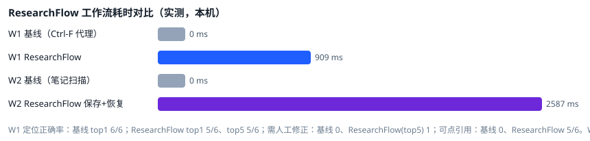

文档入库
PDF / Markdown / TXT 上传，文件内容 SHA-256 作为主键，重复上传自动去重；PDF 保留真实物理页号，空白页也保留页级身份记录。
seekdb rf_documents / rf_pages / rf_chunks
OceanBase × Qoder 2026 数据库比赛 · Qoder 赛道
ResearchFlow 把文献、技术文档与实验记录统一存入 seekdb，用向量 + 全文 + 混合（RRF）检索给出 可点开原文页的引用；同时把研究目标、已确认决策与下一步计划存入 PowerContext， 换会话后按项目一键恢复进度。两个后端职责分离、可独立断开验证。
PDF / Markdown / TXT 上传，文件内容 SHA-256 作为主键，重复上传自动去重；PDF 保留真实物理页号，空白页也保留页级身份记录。
seekdb rf_documents / rf_pages / rf_chunks
向量（HNSW ANN）、全文（ik 分词）、混合（RRF 融合）三种模式可切换、可并排对比；结果带文件名、物理页码、文本片段与稳定 chunk_id。
seekdb pyseekdb hybrid_search
每条引用都能打开 seekdb 中存储的原文页；不存在的页码返回 404。模型给出的引用还会被服务端逐条回查，编造的引用被拦截并公示。
seekdb 页级原文 + citation 校验
回答只建立在通过证据门控的检索结果上，每条论断标注「资料直接支持 / 模型推断 / 尚无证据」；语料无答案时明确说没有，不编造来源。
seekdb + LLM
研究目标、已完成工作、已确认决策、关键证据指针、未解决问题与 next_steps 显式保存到 PowerContext；系统永不自动写入模型猜测。
PowerContext Scope + Atomic Memory
新会话仅凭 project_id 取回全部进度，并生成确定性的「上次做到了哪里 / 接下来该做什么」续研简报；记忆与文献证据在界面上分通道标记。
PowerContext prepare_context + 全量读取
seekdb 只负责文献证据，PowerContext 只负责任务记忆。断开任意一个，另一个的能力边界会被明确报告， 而不是静默降级——这一点在验收用例 T7 / T8 中被真实验证。
读取中…
读取中…
collection.upsert 写入 seekdb；页与文档元数据写入关系表。hybrid_search(query=全文腿, knn=向量腿, rank=rrf) 一次调用完成混合召回；证据门控按词法覆盖率与语义相似度双重判定。remember_memory 写入 Scope；新会话 list_memory_entries 全量读取 + 快照重组 → 生成续研简报。
以下截图取自本地真实运行的 ResearchFlow（seekdb v1.4.0.0 + PowerContext 1.4.1 + DeepSeek），
由 scripts/capture_screenshots.cjs 无头浏览器自动采集，可复现。点击可查看高清图。
下表为 记录于 — 的真实运行结果（非实时查询，在线版不连接任何数据库）。 单元测试与集成验收分开统计；全部日志随仓库提交，可逐条核对。
—
—
覆盖解析、分块、门控、seekdb 集成、PowerContext 集成、citation 校验与 HTTP 契约。
—
—
验收运行器自带独立 PowerContext 与 API 实例，真实执行服务重启与断连对比。
—
—
用 Playwright 驱动真实浏览器完成提问、点引用、开原文页、上传、保存与跨会话恢复，并核对页面渲染与接口返回是否一致。
| 编号 | 场景 | 结果 | 校验数 | 失败 | 耗时 |
|---|
qoder/researchflow/verification/acceptance-run/logs/researchflow.log（JSON 行，含 request_id）scripts/probe_seekdb_capability.py 的输出记录于 ARCHITECTURE.md §2.1
两条科研工作流的实测对比。基线是可复现的脚本代理（全文关键词扫描 / 手工笔记正则扫描），
其耗时不含人工阅读与核对，因此只作为下界对照；完整方法与原始数据见仓库 BENCHMARK.md。
| embedding | 模式 | R@1 | R@5 | MRR | 页码准确@1 | 延迟 ms | 负例误报 |
|---|

| 能力 | 本网站（在线展示版） | 本地完整运行 |
|---|---|---|
| 项目介绍、架构、真实截图 | 可看 | 可看 |
| 测试报告与日志证据 | 可看（记录值） | 可重跑 |
| 上传文档 / 检索 / 问答 | 不可用（无后端） | 可用 |
| 任务记忆保存 / 跨会话恢复 | 不可用（无后端） | 可用 |
| seekdb / PowerContext 实时状态 | 不连接 | 实时 |
本网站是静态展示版：不运行 Python、不连接 seekdb 或 PowerContext，也不提供任何模拟的「在线查询」。 页面上的测试数字是某次真实运行的记录值并标注了时间；要复现或交互，请按下面的步骤在本地运行。
GitHub：github.com/chaoyisn/PowerContext（私有 fork，upstream 为 oceanbase/powercontext）
分支：2026-competition-ecosystem
路径：qoder/researchflow/
基线 SHA：d647275c308e09b7b623f322a26f5c4e85734fb0
评审访问：克隆后切到上述分支即可；若仓库尚未推送最新提交，评审包与全部验证证据亦随本说明提供。
docker start contest-seekdb（或按 RUN.md 启动 seekdb 容器）powercontext server run --port 17429cd backend && python -m app.api.mainpython scripts/seed_demo.py 后打开 http://127.0.0.1:8787/完整说明见仓库 RUN.md；验证见 VERIFICATION.md 与 verification/acceptance-run/。